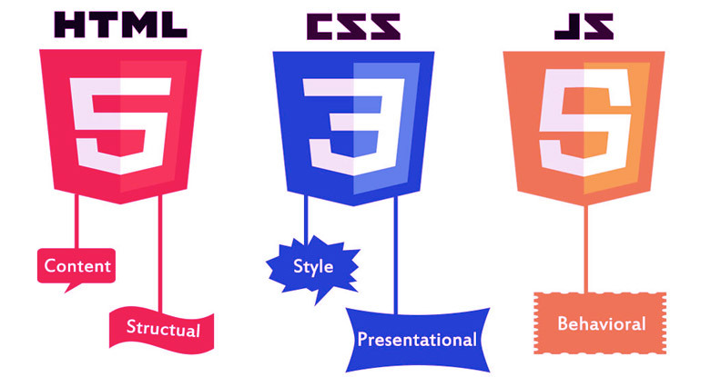

Főoldal
Üdvözlöm az oldalon!

Ez a weboldal a webprogramozás labor gyakorlat beadandójaként jött létre.
Beadandónkban a feladatunk az volt, hogy létrehozzunk egy 5 aloldalból álló weboldalt, amiben a html, css és JavaScript alkalmazásával különbőző feladatokat valósítsunk meg.
Beadandóm a következő menükből áll:
- Főoldal
- Táblázat menü
- Űrlap menü
- Motor menü
- Auto menü